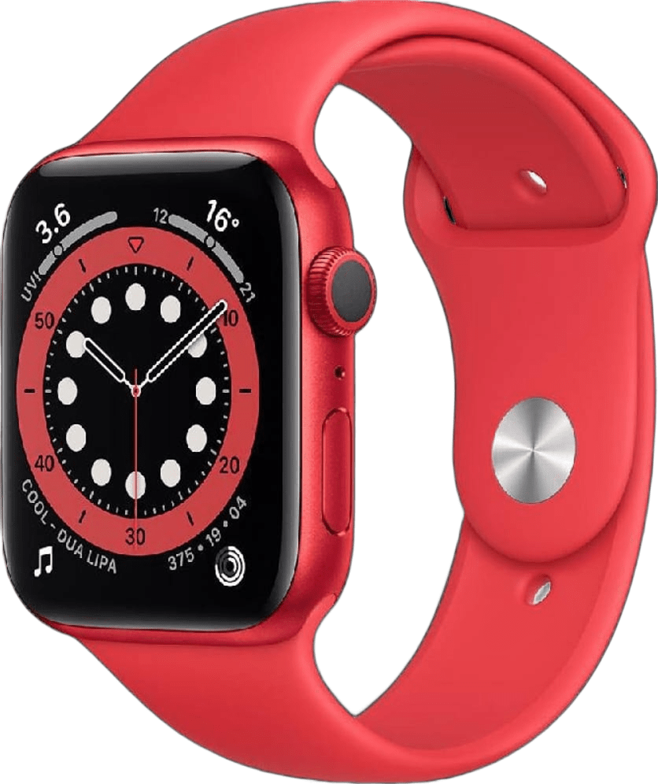
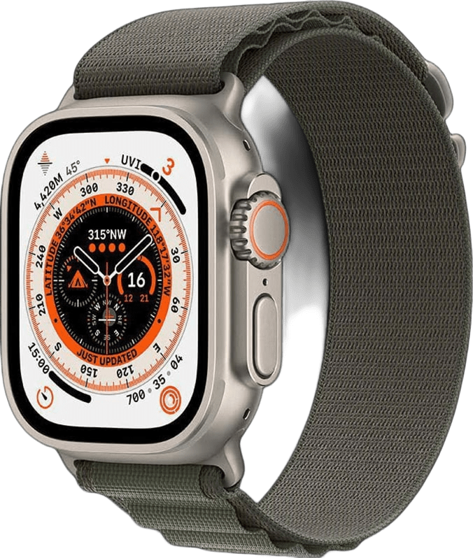
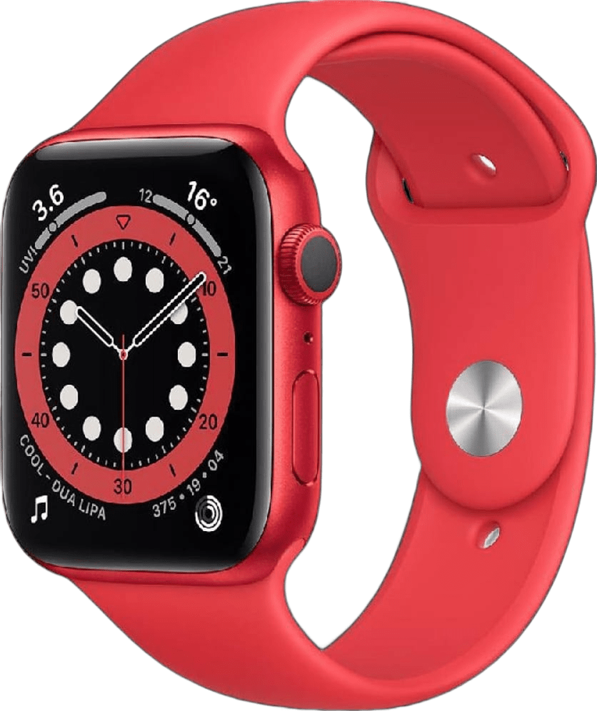
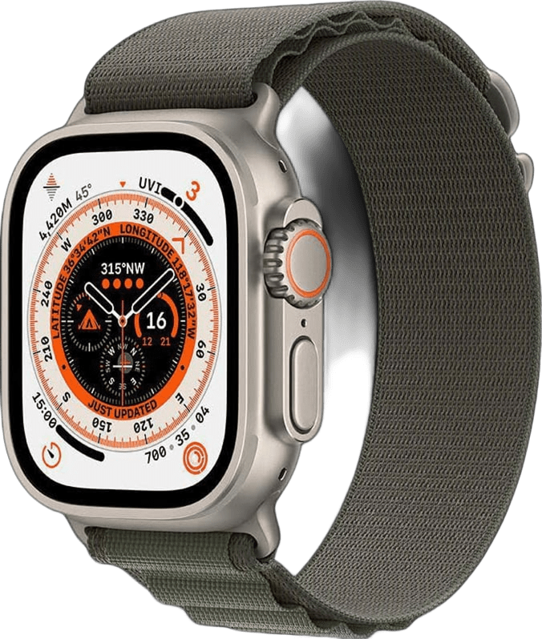
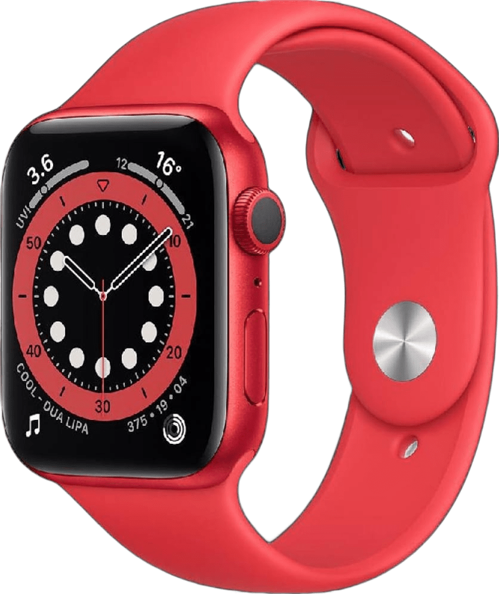
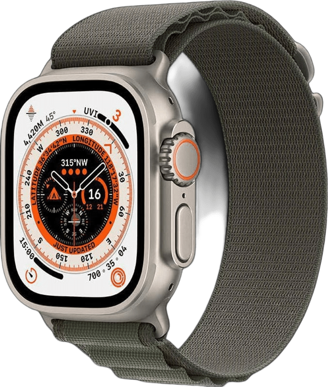

Apple launches the latest smartwatch, the S9 Watch, which contains a highly efficient processor and a powerful battery. Discover all the amazing features of Apple's advanced smartwatches!


تستمر شركة آبل في ريادتها لسوق الساعات الذكية مع إطلاق سلسلة ساعات آبل 9 الجديدة. تحتوي هذه الساعات على معالج عالي الكفاءة وبطارية قوية تدوم لفترات طويلة، مما يجعلها مثالية للاستخدام اليومي. تتمتع الساعات بتصميم عصري وقوي يمكنه تحمل ظروف الحياة اليومية القاسية.
Apple continues to lead the smartwatch market with the launch of the new Apple Watch Series 9. These watches are equipped with a highly efficient processor and a powerful battery that lasts for extended periods, making them perfect for everyday use. The sleek and robust design ensures that the watch can handle the challenges of daily life.
تعد ساعات آبل من أبرز الأجهزة القابلة للارتداء التي تقدمها شركة آبل، وتستعد الشركة لإطلاق العديد من الفعاليات الخاصة بالتقنية. تشمل الفعاليات القادمة عروضًا حية وورش عمل تفاعلية لعرض مميزات ساعات آبل الجديدة وأحدث التقنيات التي تم تضمينها في الإصدار الجديد. لا تفوت الفرصة لمتابعة آخر الأخبار!
Apple is gearing up for some exciting events showcasing the new features of their Apple Watches. The upcoming live demonstrations and interactive workshops will provide an in-depth look at the new capabilities and features that are set to transform the smartwatch market. Stay tuned for the latest announcements!
في كل إصدار جديد من ساعات آبل، تقدم الشركة تحسينات ملحوظة في تقنيات الشاشات. بدءًا من الشاشات ذات الدقة العالية إلى شاشات OLED المدمجة، تستمر آبل في تحسين تكنولوجيا الشاشات لتوفير تجربة مستخدم أفضل. تعرف على آخر الابتكارات في هذا المجال وكيف ستغير تجربة استخدام ساعة آبل.
With every new release of the Apple Watch, Apple continues to improve screen technologies. From high-definition displays to integrated OLED screens, Apple is constantly pushing the boundaries of display technology to provide users with the best possible experience. Learn about the latest innovations in this area and how it will enhance your Apple Watch experience.